Vanderbilt · Learning Series · ATD facilitator guide · print edition
Workflow & Process Redesign, the facilitator guide

Run of show
| Screen | Full (min) | Core (min) |
|---|---|---|
| Welcome / QR | 3 | 2 |
| Objectives | 2 | 1 |
| Agenda | 1 | — |
| 01 · The case for redesign | 9 | 6 |
| Manifesto | 1 | — |
| 02 · See the work as a process | 12 | 8 |
| 03 · Draft, verify, decide | 12 | 9 |
| 04 · Design the verify | 11 | 7 |
| 05 · The Redesign Lab | 14 | 10 |
| 06 · Bring the team along | 10 | 6 |
| Recap quiz | 4 | 4 |
| Capstone · My redesign card | 6 | 6 |
| Glossary | 1 | — |
| Closing · commitment | 4 | 1 |
| Total | 90 | 60 |
Audience
Managers, team leads, and project owners: anyone who owns a repeating team workflow and is deciding where AI fits in it. 8 to 24 works best (the mapping and assignment drills run in pairs); scales larger with room votes. No prerequisites, though AI Basics helps with tool fluency, and the traffic-light data rule from the AI courses is assumed and restated here.
Room setup
Projector plus presenter device; learners on their own devices via the Welcome-slide QR; movable seating for pairs. A whiteboard or flip chart matters more than usual: the mapping drills want visible step lists. Virtual: breakouts of 2 for the mapping and assignment swaps. Set the norm in the first minute: workflows and roles, never people's names, and nothing typed is saved or sent.
Materials
- Projector or large display and the facilitator link open (this edition)
- Facilitator laptop with arrow keys or clicker; all notifications off
- Learner devices (BYOD) joining via the welcome-slide QR
- A few printed cheat sheets (cheatsheet.html) for anyone without a device
- Printed redesign cards (worksheet.html) as the no-device and projector-failure fallback
- Whiteboard or flip chart with markers for the step maps and the announcement rewrites
- Sticky notes or index cards for the pair mapping drill (one step per note works well)
A week before
- Read this guide end to end, then run BOTH editions start to finish, doing every exercise, including mapping one of your own team's workflows honestly. You will be asked what you'd redesign first; a real answer plays far better than a hypothetical.
- Build your own redesign card in the capstone for a workflow you genuinely own. You'll show the structure, never the contents.
- Send the pre-work invite (template on this page) with the calendar invite: bring one repeating team workflow that eats real hours, held privately.
- Decide your path now: Full (90-minute slot) or Core (60). Mark which pair drills you keep versus run solo.
- Skim the current McKinsey State of AI report so the numbers in Guess the Number are fresh; the game's reveals carry the citations, but you should be able to say 'the survey' with a straight face.
The day before
- Test the projector with the facilitator link; confirm the notes rail is readable from where you'll stand.
- Scan the welcome QR from the back of the room with your own phone; it must land on the learner edition.
- Run one full round of the Redesign Lab and one trainer so you can drive them without looking.
- Print 5 to 10 cheat sheets and redesign cards, and stock the sticky notes.
- Re-read the tough-questions bank; say the 'is this how jobs get cut?' response out loud once. That question is coming.
30 minutes before
- Welcome slide up as people arrive; it does the enrolling for you.
- Close every other tab and app; silence the machine.
- Test arrow-key navigation and one interaction (run a Guess the Number round, open the lab).
- Write 'WORKFLOWS AND ROLES, NEVER NAMES' where the room can see it all session.
- Draw four empty boxes labeled Gather, Transform, Judge, Commit on the whiteboard; you'll fill them live in section 02.
When things go sideways
If Projector or the site fails mid-session: Teach from the whiteboard: the four step types, the draft-verify-decide pattern, and the verifier's rubric all draw in seconds. The mapping and assignment drills never needed a screen; the capstone moves to the printed card. The lab becomes a group walk-through: read each step's three options aloud and have the room vote.
If Learner devices can't join (wifi or filters): Run facilitator-only: the trainers play well on the projector with the room voting A/B/C by hands; the private mapper and capstone move to paper. You lose typing, not learning.
If You're 10+ minutes behind by the Redesign Lab (05): Declare the Core path silently: pair drills become solo passes, debriefs shrink to one voice, and the closing tightens to the fist-to-five plus commitment round. Never cut the lab, the mapper, or the capstone; they carry the session's practice objectives.
If Someone names a colleague or starts prosecuting a specific person's job: Protect the norm warmly: 'Hold that. Workflows and roles, never names. The redesign works on steps, not people.' If it keeps happening, it usually means a real staffing anxiety is in the room; name the pilot standard's honest-hours rule and move the person to a private follow-up.
If The room is skeptical: 'AI is overhyped, this will blow over': Don't argue futures; play Guess the Number and let the adoption data speak. The frame that lands: whatever you think of the hype, 88 percent adoption means your team is already using it as unmanaged shortcuts, and shortcuts without design is the worst of both worlds. Redesign is the risk-management position, whatever the hype does.
If The room is the opposite: AI enthusiasts who want to automate everything today: Aim the enthusiasm at the pattern: 'Great, you're the pilot owners.' Then hold the line on the two human steps; the Rate the Check trainer and the lab's weak tier usually do the sobering for you. Enthusiasts fail redesigns through soft verification, and the automation-bias material is written for exactly them.
If Someone raises a real data-privacy concern mid-flight: Stop and honor it; this is the one interruption that outranks the agenda. Restate the traffic light (green public, yellow internal in approved VU tools only, red private information about people, never), confirm their case against it, and if it's genuinely ambiguous, park it with a promise to route it to the right owner rather than improvising policy from the front of the room.
Tough questions, ready answers
Q: Is this how our jobs get cut? Be honest.
The honest answer has two parts. Managers who run this pattern are moving mechanical volume to machines and moving people toward verification, judgment, and the work that was getting skipped; that is the design, and the pilot standard requires saying out loud what the saved hours are for. And no manager can promise what an organization decides years out. What you can control is whether your team's redesign is done with the people who do the work, with a visible metric, or done to them. The first kind builds the skills that stay valuable; the second kind builds the fear that makes everything fail.
Q: Why not just wait? The models improve every few months; today's redesign will be obsolete.
The map doesn't expire. Steps, handoffs, checks, and decide points outlive any particular model, and a team that has mapped its work can re-assign steps in an afternoon when capabilities shift. Waiting has a real cost the survey makes visible: the shortcuts spread anyway, unmanaged, and the organizations getting value now are the ones that started designing. You're not betting on a model; you're building the muscle of assignment.
Q: My team already uses AI constantly. Doesn't that mean we've done this?
Usage and redesign are different things, and the data splits them cleanly: 88 percent use, one in five redesigned. Personal shortcuts have no named verifier, no shared standard, and no metric; when one goes wrong it damages trust in everything. The test: if your best user left tomorrow, would the workflow keep its gains? If not, it's a shortcut. The session's whole job is converting shortcuts into designed, shared workflows.
Q: Doesn't verification just move the work around? We save an hour drafting and spend it checking.
If the check costs what the work did, that step was a bad draft candidate, and the pattern says so explicitly: verification has a budget. On good draft candidates the math is lopsided: an hour of pulling and formatting becomes minutes of spot-checking against source. The design question is always the ratio, and the miss log tells you over time whether the ratio is holding or the step should go back to a human.
Q: What about hallucinations? If AI makes things up, how can we trust any draft?
You don't trust drafts; that's the point of the word. The pattern treats every AI output as unverified by definition, which is why the verify step has an owner, sources, and a reject path. Notice the symmetry: human first drafts also contain errors, and mature workflows always had review. What's new is the failure texture: AI errors arrive fluent and confident, which is exactly why the check runs against sources instead of against how the draft reads.
Q: I don't have authority to redesign processes. They come from above.
Some do, and start where your authority actually is: almost every team runs workflows the org chart never sees, the reports, updates, summaries, and preps that exist because your team invented them. Those are fully yours to map and redesign, and they're where the hours hide anyway. And a manager who arrives at the process-owner's door with a map, a pilot result, and a metric is making a request that tends to get granted.
Copy-paste templates
Pre-work invite (paste into the calendar invite)
Subject: Before our Workflow & Process Redesign session. One thing to bring: one piece of repeating work your team produces on a schedule, a weekly report, a review cycle, an onboarding sequence, anything that eats real hours. You will never be asked to name people; every exercise runs on workflows and roles, and everything you type stays on your screen. Come knowing roughly how many hours that workflow costs in a normal week. That's it, no reading, no tools to install.
7-day pulse (send one week after)
Subject: One week later, did the mapping session happen? Three quick lines, reply whenever: 1) Did you run the 30-minute mapping session from your redesign card? 2) What did the team's map show that your own version missed? 3) What's the pilot's metric, and where is it posted? Replies come to me only. Not yet? The card still works; this note is your nudge.
30-day re-poll (send a month after)
Subject: Thirty days of the redesign. Two questions, same scale as the room: 1) Fist to five, how confident are you now in the draft-verify-decide assignments you made? 2) What does the workflow cost now, and what have the checks caught? Reply with a number and a line. The before-and-after pair is how we know this session did more than feel good.
After the session
Seven days out, send the pulse: 'Did the mapping session happen? What did the team's map show that yours missed? What's the pilot's metric?' At 30 days, send the re-poll: the same fist-to-five confidence question from the close, plus 'what does the workflow cost now, and what have the checks caught?' The count of mapping sessions actually held is the program's headline Level 3 metric.
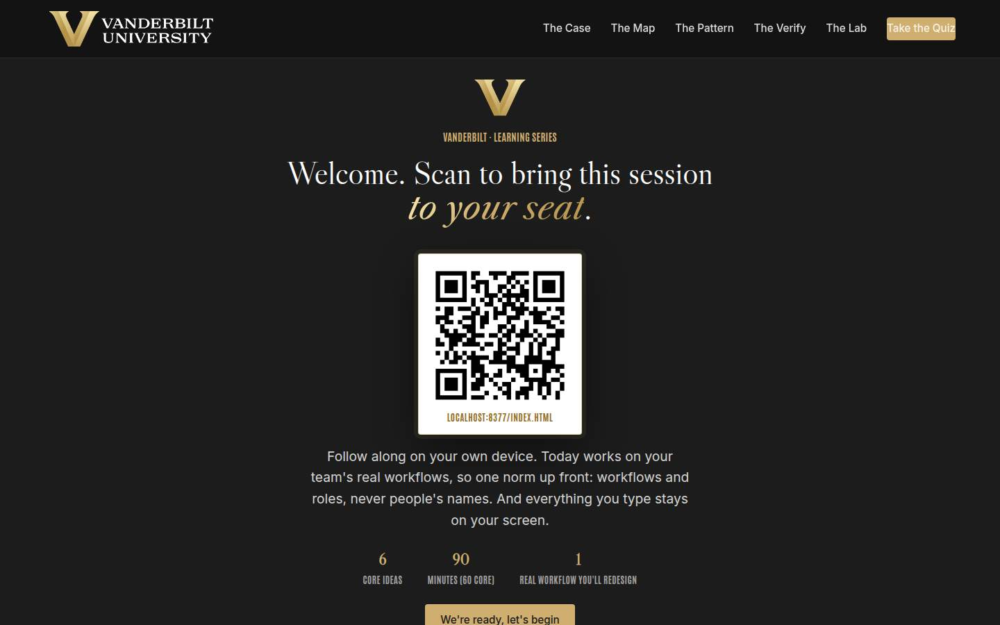
Welcome / QR Full 3 min · Core 2
Get every learner into the experience on their own device and set the norm that makes real-workflow material safe: workflows and roles, never names, and nothing typed leaves the screen.
Say
“Welcome. Point your camera at that code before we start. Today is about the one AI skill the research says actually separates teams that get value from teams that get demos, and it isn't prompting. It's redesigning how work flows. We'll work on your team's real workflows, so one ground rule for the next ninety minutes: workflows and roles, never people's names. And everything you type today stays on your screen; nothing is saved or sent anywhere.”
Do
- Have this slide projected as people arrive.
- Point at the QR and get phones up before you say anything else.
- Set the norm explicitly and early: workflows and roles, never people's names; typed exercises stay on their screens.
- Confirm by show of hands that most of the room has the site open before advancing.
Ask
“Quick calibration, shout it out: how many of you have used AI for actual work in the last week? And how many of your TEAMS have a designed, shared way of using it?”
Expect:
- Nearly every hand up on the first question
- Almost every hand down on the second
- Some nervous laughter at the gap
Respond: Name the gap warmly: 'That gap in this room is the same gap in the global data, and closing it is a management skill, which is why you're here and the tools aren't.'
Validate: 80%+ of the room has the deck open on a device; the room can repeat the 'workflows and roles, never names' norm back to you.
Watch for: Anyone bracing for either an AI sales pitch or an AI panic session. The frame that relaxes both: today is a process-design session that happens to involve AI, and the research is unusually hard-nosed.
Transition: “Here's exactly what you'll walk out able to do.”
Core path: Core: one scan prompt, the norm stated once, move on.
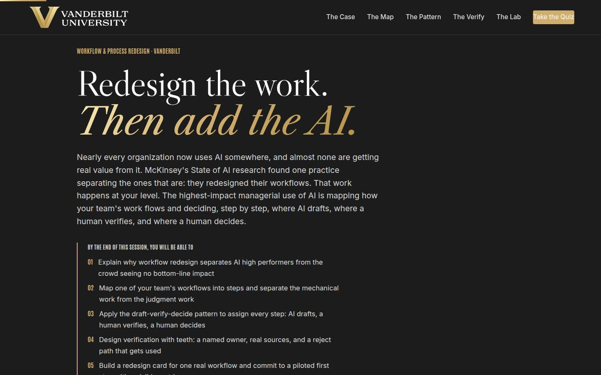
Objectives Full 2 min · Core 1
Set the contract: five capabilities, ending in one real workflow carded for redesign with a dated team mapping session.
Say
“Five things by the end: you'll know why redesign, and only redesign, separates the organizations getting real value from AI. You'll be able to map a workflow into steps and tell mechanical work from judgment work. You'll make the assignment this whole session is named for: where AI drafts, where a human verifies, where a human decides. You'll design verification that actually catches things. And it all lands in one artifact: a redesign card for a workflow your team actually runs, with a date on it.”
Do
- Read the five objectives briskly, in plain language.
- Land on the last one: this session ends with a REAL redesign card, one workflow, one draft step, one date.
- Name the sources once for credibility: McKinsey's State of AI survey for the numbers, and the draft-verify-decide pattern as the method.
Validate: Learners can say what the capstone will be (one workflow, one draft step, one dated mapping session).
Watch for: Tool questions arriving early ('which AI should we use?'). Park them: the session is deliberately tool-agnostic, and the pattern outlives any tool choice.
Transition: “Six ideas, in a deliberate order.”
Core path: Core: objectives 1 and 5 out loud; the rest on screen.
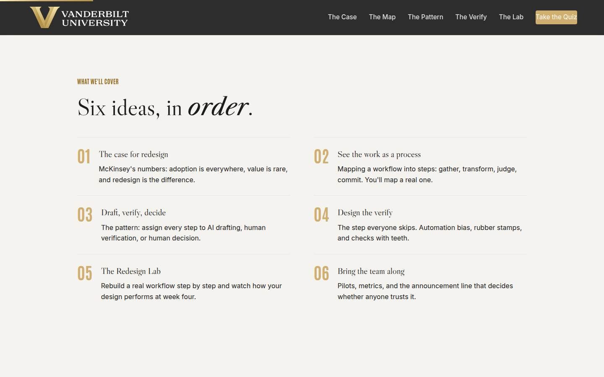
Agenda Full 1 min · Core skip
Show the arc once so learners can place each tool as it arrives: evidence, map, pattern, check, practice, people.
Say
“The arc is simple: first the evidence, then learning to see your team's work as a process, then the pattern for assigning each step, then the step everyone skips, verification. Then you'll rebuild a workflow in the lab and finish with the part that decides everything: bringing your team along.”
Do
- Walk the six items in one breath each.
- Point out the shape: the case (01), seeing the work (02), the pattern (03 and 04), practicing it (05), and landing it with humans (06).
Validate: None needed; this is orientation.
Watch for: Don't teach here; every concept has its own slide.
Transition: “Start with the evidence, because some of you think this is hype and some of you think it's magic, and the data disagrees with both.”
Core path: Core: skip entirely; the deck's structure carries it.
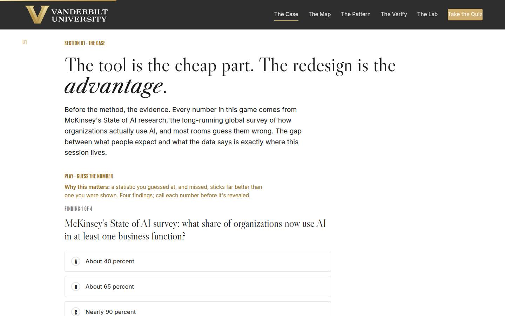
01 · The case for redesign Full 9 min · Core 6
Establish with guessed-at, missed numbers that AI adoption is nearly universal, value is rare, and workflow redesign is the strongest measured differentiator, which makes it a line-manager job.
Say
“Before any method, the evidence, and I want you to guess. McKinsey has been surveying global AI use for years. Adoption is now close to universal: nearly nine organizations in ten use AI somewhere. And the share getting meaningful bottom-line value is around six percent. That gap is not a technology gap; everyone has the same tools. The strongest thing separating the six percent, out of everything measured, is that they fundamentally redesigned workflows. Four findings, call your number before each reveal.”
Do
- Frame the game: four findings from McKinsey's State of AI survey, guess each number before it's revealed. Missed guesses are the point; they stick.
- Run Guess the Number on devices, or as a room vote on the projector; call for guesses out loud before each reveal.
- After the reveal round, land the frame: the tool is the cheap part; the redesign is the advantage, and it happens at your level.
- Run the quick check (redesign as the strongest EBIT factor), then the pair activity: where does AI already show up on your team, and is it a redesign or a shortcut?
- Count the shortcut-versus-redesign hands out loud and connect the count to the 88-versus-6 gap.
Ask
“Where does AI already show up on your team, and be honest: is any of it a designed, shared workflow, or is it all personal shortcuts?”
Expect:
- Nearly all shortcuts: drafting emails, summarizing docs, quiet uses nobody reviews
- One or two genuine designed uses, usually from a team that got burned once
- Someone admits they don't actually know what their team uses
Respond: For the 'don't know' answer, warmly: 'That answer is the most useful one in the room; the mapping session on your capstone card is where you find out.' For the shortcut majority: 'Shortcuts mean the adoption already happened. The design is the part that's missing, and that part is yours.'
Debrief: Adoption is solved and value isn't, and the difference is redesign. Which means the scarce skill in this game is the one this room already has: knowing how the team's work actually flows.
Validate: Quick check correct; the shortcut count lands visibly and the room sees its own adoption-value gap.
Watch for: A methodology skeptic litigating survey design. Don't defend a single number; the case is the convergence: near-universal adoption, rare value, and redesign as the consistent differentiator across editions of the survey. Park deep methodology questions.
Transition: “One sentence before the method, nine words that explain most failed AI projects.”
Core path: Core: Guess the Number as a fast room vote, quick check stays, the pair inventory becomes one show of hands with no discussion.
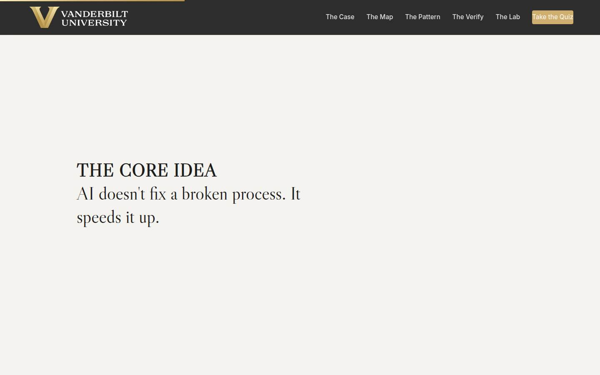
Manifesto Full 1 min · Core skip
One beat of stillness to lock the session's core idea before the method arrives.
Say
“AI doesn't fix a broken process. It speeds it up.”
Do
- Let the line animate word by word. Say nothing until it finishes.
- Read it once, slowly, then advance.
Validate: None; this is pacing.
Watch for: The urge to talk over it. Don't.
Transition: “So before we add anything, we have to see the process. Most of us never have.”
Core path: Core: skip; say the line yourself as you pass it.
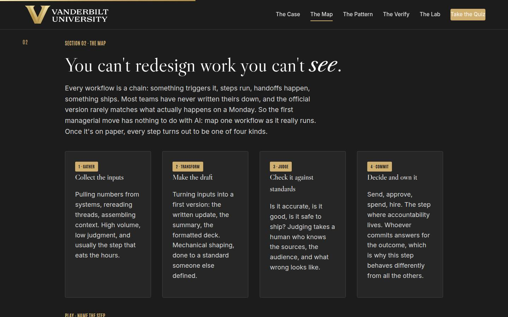
02 · See the work as a process Full 12 min · Core 8
Teach learners to see a workflow as a step map (gather, transform, judge, commit) and get every learner one real, privately mapped workflow that the rest of the session will operate on.
Say
“You cannot redesign work you can't see, and almost nobody has ever written down how their team's work actually flows. Every workflow is a chain: a trigger, steps, handoffs, something ships. And every step in the chain is one of four kinds. Gather: collecting inputs, the pulling and assembling that eats hours. Transform: turning inputs into a first version. Judge: checking it against standards, is it right, is it good, is it safe. And commit: send, approve, spend, the step where someone's name goes on the outcome. In a few minutes you'll map a real workflow from your team, privately, and I promise you the map will surprise you. The official version and the real version are never the same document.”
Do
- Walk the four step-type cards IN ORDER, filling the four whiteboard boxes with one example each as you go.
- Stress the seeing problem: the official process and the real Monday process differ, and the redesign has to work on the real one.
- Send them to Name the Step: five moments, name the type. Fast, on devices.
- Then the section's real work: the private mapper. Three fields: the workflow, the grind, the judgment. Repeat the privacy line before they type.
- Give the mapper quiet time; field 3 (where judgment actually changes the outcome) deserves a full minute.
- Run the pair narration from Go deeper: one narrates their real workflow, the partner writes the steps and reads them back, then tag G, T, J, C together.
Ask
“Think about your mapped workflow's grind step, the one eating hours. Who on your team knows the most about how that step really works, and when did you last watch them do it?”
Expect:
- The most junior person, and 'honestly, never'
- A specific name arrives with an admission the manager only sees the output
- A few managers realize they ARE the grind step
Respond: Land the design rule: 'The person who does the grind is your co-designer, and the mapping session on your card is where you finally watch. Managers consistently misjudge which step eats the hours; the doer can tell you in one sentence.'
Debrief: Four step types, one real workflow on paper, and a grind step with a name. The gather and transform steps you just tagged are exactly where the next section's pattern points.
Validate: 4+ of 5 on the trainer for most of the room; every learner has a mapped workflow with a named grind step and a named judgment step. This map feeds sections 03, 04, 05, and the capstone.
Watch for: Maps that are actually org charts or tool lists. Redirect to verbs: what happens first, what happens next. Also the learner who says their work 'has no repeating workflows'; ask what their team did last Monday morning, and a workflow will appear.
Transition: “Now the assignment that gives this session its name.”
Core path: Core: cards fast against the whiteboard boxes, trainer on devices, mapper stays at full length with its quiet minute protected; the pair narration drops to an optional 90 seconds.
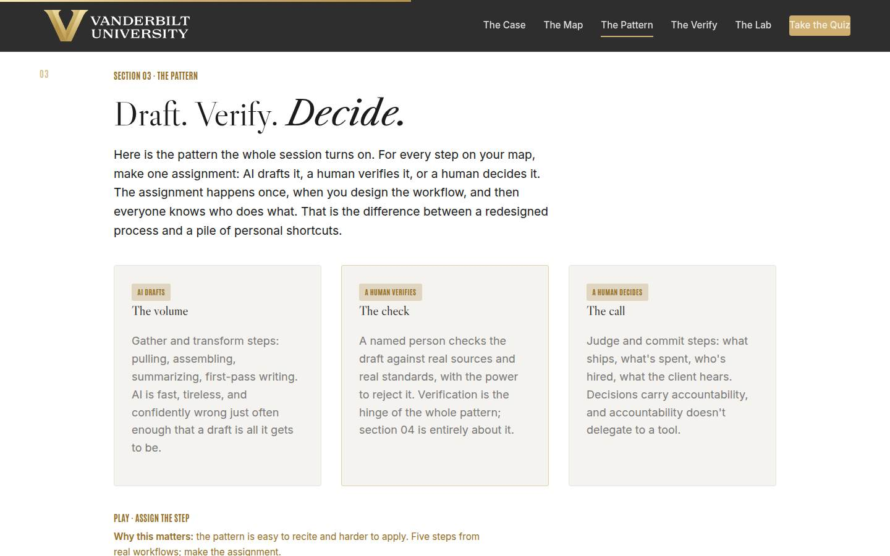
03 · Draft, verify, decide Full 12 min · Core 9
Install the draft-verify-decide pattern as a per-step assignment made once at design time, with the traffic-light data rule as a hard boundary on every draft assignment.
Say
“Here's the pattern everything else hangs on. For every step on your map, one assignment. AI drafts: the gather and transform volume, because AI is fast, tireless, and confidently wrong just often enough that a draft is all it gets to be. A human verifies: a named person checks the draft against real sources with the power to reject it. A human decides: the judge and commit steps, because decisions carry accountability and accountability doesn't delegate to a tool. You make the assignment once, when you design the workflow, and then everyone knows who does what. One more rule sits above all of this: the traffic light from the AI courses. Green, public or generic, go. Yellow, internal, approved VU tools only. Red, private information about people, never. The light outranks the pattern, every time.”
Do
- Walk the three cards: AI drafts the volume, a named human verifies against sources, a human decides where accountability lives.
- Stress the design move: the assignment happens once per workflow, at design time, and then everyone knows who does what. That is what separates a redesign from a pile of shortcuts.
- Send them to Assign the Step: five real steps, make the assignment.
- Walk the traffic light card and be unambiguous: green public, yellow internal in approved VU tools only, red private information about people, never. The light outranks the pattern.
- Run the pair swap from Go deeper: assign your partner's mapped workflow, then compare with what the owner would have chosen; surface one sharp disagreement to the room.
Ask
“From the pair swap: where did you and your partner disagree on an assignment, and what was the disagreement really about?”
Expect:
- Judge steps: one person saw mechanical checking, the other saw judgment
- The owner defended keeping a grind step manual 'because quality'
- Someone wanted AI further into a commit step than their partner would allow
Respond: Name the pattern in the disagreements: 'Notice the fights are almost never about gather steps; they're about where judgment starts. That boundary is the real design decision, and the disagreement means you found it. When in doubt, keep the human and revisit after the pilot's miss log has data.'
Debrief: Every step on your map now has an owner: the machine drafts, a named human verifies, a human decides. The weakest link in that chain is the middle one, which is why it gets its own section.
Validate: 4+ of 5 on the trainer; every learner's mapped workflow has draft-verify-decide assignments on its steps, and the room can state the traffic light unprompted.
Watch for: Two drifts: assigning by person ('Sam is good with AI, Sam does the AI parts'), which the pattern explicitly forbids, and quiet red-light violations in draft enthusiasm ('AI could summarize the candidates!'). Correct both immediately and kindly; the traffic light correction matters more than the flow of the room.
Transition: “Because a draft without a real check isn't a workflow. It's a rumor with good formatting.”
Core path: Core: cards and traffic light at full strength, trainer on devices; the pair swap becomes a solo pass on your own map with the least-sure assignment marked.
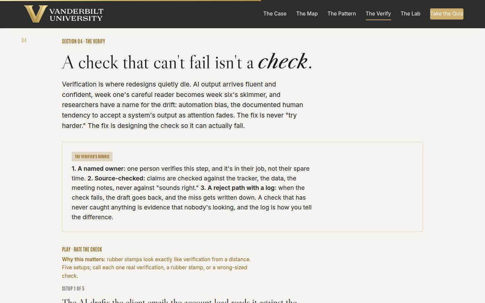
04 · Design the verify Full 11 min · Core 7
Make verification a designed artifact (named owner, real sources, logged reject path) and install automation bias as the failure mode that kills redesigns in week three.
Say
“Verification is where redesigns quietly die, and it dies through a well-documented pattern called automation bias: the drift toward accepting a system's output as attention fades. Week one, your verifier reads every line. Week six, the drafts have been right so many times that reading became skimming, and that's precisely when the expensive miss ships. You cannot fix this with 'be careful.' You fix it with design: a named owner whose job includes the check. Claims checked against sources, the tracker, the data, the notes, never against whether it sounds right, because sounding right is the one thing AI always does. And a reject path with a log, because a check that has never caught anything is not evidence of quality; it's evidence that nobody's looking.”
Do
- Land automation bias first: fluent output plus fading attention equals rubber stamps, and it happens to smart, careful people on schedule.
- Walk the verifier's rubric on the gold card: named owner, source-checked, reject path with a log.
- Land the counterintuitive tell: a check that has never caught anything is a warning light, and the log is how you tell diligence from theater.
- Send them to Rate the Check: five setups, call each one real, rubber stamp, or wrong-sized.
- Run the quick check on automation bias, then the pair drill: design the verify for the ticket-summary step in four lines, and stress-test one pair's design with 'how would this fail quietly?'
Ask
“Think of a check that already exists somewhere in your team's work. When it passes something, how would you know whether that was diligence or a rubber stamp?”
Expect:
- Silence, then 'honestly, I couldn't tell the difference'
- Someone names a real tell: comments in the doc, questions coming back
- Someone realizes their approval step has never once rejected anything
Respond: Anchor the log: 'The only reliable tell is a record of catches. Rejections coming back are the heartbeat of a real check. If an approval step has passed everything for a year, you don't have a check; you have a signature with extra steps.'
Debrief: Owner, sources, reject path, log. Verification designed this way is cheap, and it's the difference between the lab's strong tier and its disasters, which you're about to experience directly.
Validate: 4+ of 5 on the trainer; the pair designs include all four lines (owner, source, cadence, reject path); the room can explain why zero catches is a warning sign.
Watch for: The over-correction: learners concluding everything needs heavyweight review. Keep the budget idea alive; wrong-sized checks are a real failure mode, and the trainer's agenda item exists to make that legitimate. Verification spends attention, and attention is the scarcest thing your team has.
Transition: “Enough theory. You have a Monday morning to redesign.”
Core path: Core: bias framing in ninety seconds, rubric verbatim, trainer on devices; the pair drill becomes a solo four-line design for your own workflow's draft step.
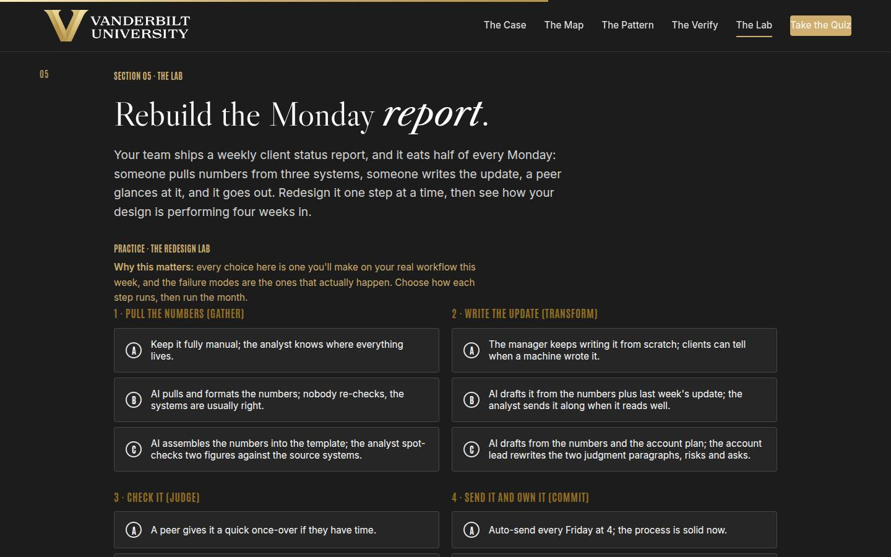
05 · The Redesign Lab Full 14 min · Core 10
Give every learner a full felt rep of the method: four steps of a real workflow, one assignment each, and a four-week outcome that rewards design quality rather than AI enthusiasm. The session's deepest practice block.
Say
“Here's a workflow you all recognize: the weekly client status report. Half of every Monday. Someone pulls numbers from three systems, someone writes the update, a peer glances at it, and the manager sends it. You're going to redesign it step by step: for each of the four steps, pick how it runs. Then the lab runs four weeks and shows you what your design did. One warning from the field data: when these redesigns fail, it is almost never because the AI wasn't good enough. It's because a wrong thing flowed through a soft check and reached a client. Watch where the lab punishes you; it's never for how much AI you used.”
Do
- Set the scenario in one breath: the weekly client report eats half of every Monday, four steps, redesign it.
- Send them into the lab on devices: choose how each step runs, then run the month.
- Let people get their four-week outcome individually; the mid and weak tiers teach more than the strong one, so don't coach choices in advance.
- Ask for a show of hands by tier: who got the strong month, who got week-three problems. Have one weak-tier learner read their coach notes aloud; the room learns from the postmortem.
- Push the rerun: strengthen your weakest step and run the month again. The delta between runs is the lesson.
- Then the pair drill: find the week-three failure in your OWN mapped workflow and strengthen that one check with the rubric.
Ask
“For those who hit the mid or weak tier: which single choice cost you the month, and would your real team have made the same one?”
Expect:
- The soft check: 'reads well' or the peer once-over
- The auto-send: it felt efficient right up until the outcome
- An honest 'my real team runs the weak version of this today'
Respond: Treat that last answer as the room's win: 'That recognition is the whole lab. The weak tier isn't a hypothetical; it's a description of unmanaged shortcuts, which is what most AI use looks like today. You now know the three fixes: owner, source, log.'
Debrief: The lab's scoring is the session's thesis in miniature: value comes from the design around the AI, and week three is where soft designs go to die. Your real workflow's week-three failure now has a name and a fix.
Validate: Every learner completes at least one lab run; most reach the strong tier on a rerun; every learner can name their real workflow's week-three failure and the check that catches it.
Watch for: Learners who game the lab by picking the obviously maximal option everywhere without reading the coaching. The question that re-engages them: 'which of these choices would your actual team push back on, and why?' Also watch clock discipline; this section has the least slack.
Transition: “One thing left, and it's the thing that decides whether any of this survives contact with your team.”
Core path: Core: one lab run instead of run-plus-rerun (rerun only for learners who hit weak tier), tier hands stay, the pair drill becomes a solo week-three-failure hunt. This is the floor; never cut the lab entirely.
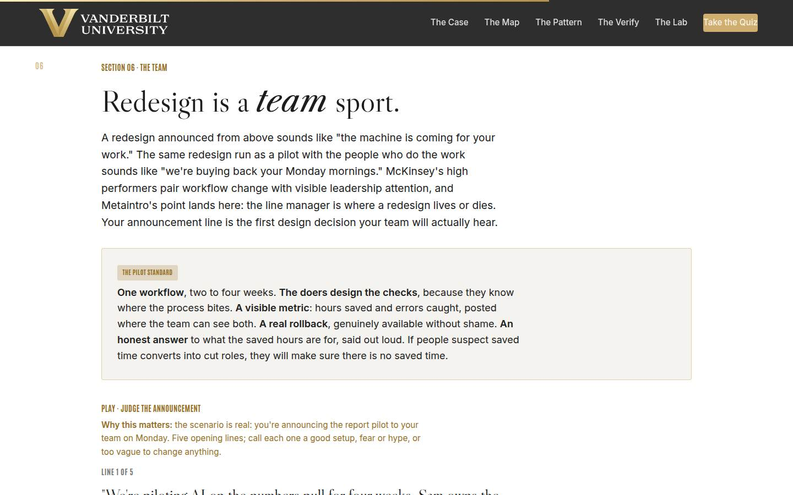
06 · Bring the team along Full 10 min · Core 6
Install the pilot standard (doers design checks, visible metric, real rollback, honest hours) and drill the announcement line, the first artifact a team actually hears from a redesign.
Say
“Everything you've built today can be killed in one sentence, and it's usually the first sentence your team hears about it. A redesign announced from above sounds like 'the machine is coming for your work,' and a team that hears that will make sure the pilot fails, quietly and completely. The same redesign run as a pilot sounds different: one workflow, two to four weeks. The people who do the work design the checks, because they know where it bites. The metric, hours saved and errors caught, posted where everyone can see it. A real rollback, available without shame. And the honest answer, out loud, about what the saved hours are for. Your announcement line is a design artifact. Draft it like one.”
Do
- Land the emotional reality first: an announced redesign sounds like 'the machine is coming for your work' unless it's designed not to.
- Walk the pilot standard card: one workflow, doers design the checks, visible metric, real rollback, honest answer about the hours.
- Say the hard part plainly: if people suspect saved time converts into cut roles, they will make sure there is no saved time.
- Send them to Judge the Announcement: five lines, call each one good, fear-or-hype, or vague.
- Run the quick check, then the group draft-aloud: each group drafts one announcement line for their lab redesign, the room calls each, and the scariest plus vaguest get rewritten live.
Ask
“What ARE the saved hours for on your team? Name the real work that's been getting skipped.”
Expect:
- Client or stakeholder time that keeps getting cannibalized
- The improvement work: documentation, cleanup, the backlog nobody touches
- An honest 'I don't know yet,' usually from the busiest manager in the room
Respond: Push past the first answer: 'Say it as a sentence your team would believe, with the work named. If you can't finish the sentence, that's your homework before the mapping session, because the pilot standard requires saying it out loud in the first minute.'
Debrief: The pilot standard turns a scary announcement into a set of checkable claims, and checkable claims are the only thing teams trust. The doers design the checks; the metric hangs on the wall; the hours have a named destination.
Validate: 4+ of 5 on the trainer; drafted lines name the workflow, owner, metric, and review date; the room can say what the saved hours are for without the word 'efficiency.'
Watch for: The manager who says 'my team will just be told.' Don't argue authority; point at the lab: the weak tier is what compliance without ownership produces. And keep the hours conversation honest; overpromising job safety you can't guarantee is its own trust failure, and the tough-questions bank has the honest version.
Transition: “That's the full method. Quiz first, then the card that puts a date on it.”
Core path: Core: pilot standard and the fear line at full strength, trainer on devices, quick check stays; the draft-aloud shrinks to one group's line judged by the room.
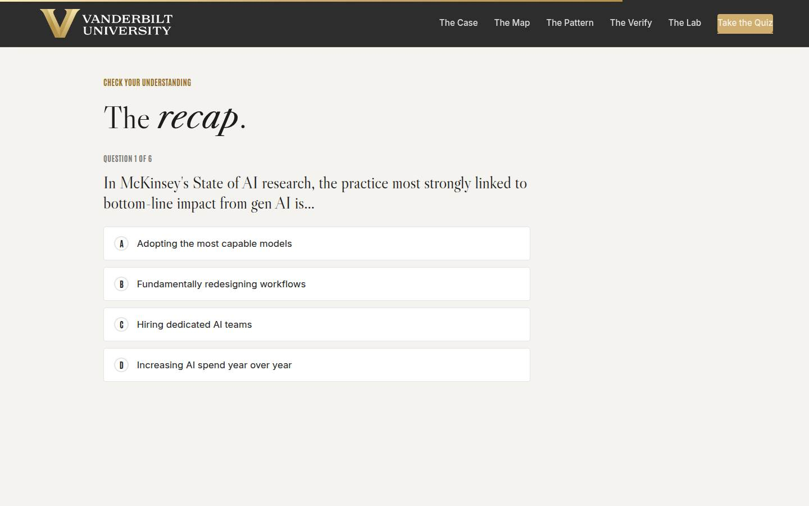
Recap quiz Full 4 min · Core 4
Score the session's knowledge against the five objectives before the capstone applies it (Kirkpatrick Level 2).
Say
“Six questions, one per big idea. This is the systems check before you write the card that leaves the room with you.”
Do
- Everyone takes it on their own device, all six questions.
- Ask for hands on 5-or-better; celebrate briefly.
- For any question the room visibly missed, do a 30-second reteach from the relevant slide, not a lecture.
Validate: Room mode at 5/6 or better. The quiz maps onto the objectives, so misses tell you exactly what to reteach.
Watch for: Racing. Frame it as the systems check before the card, not a race.
Transition: “Now the only part of today that changes anything.”
Core path: Core: keep at full length; this is the objectives' evidence.
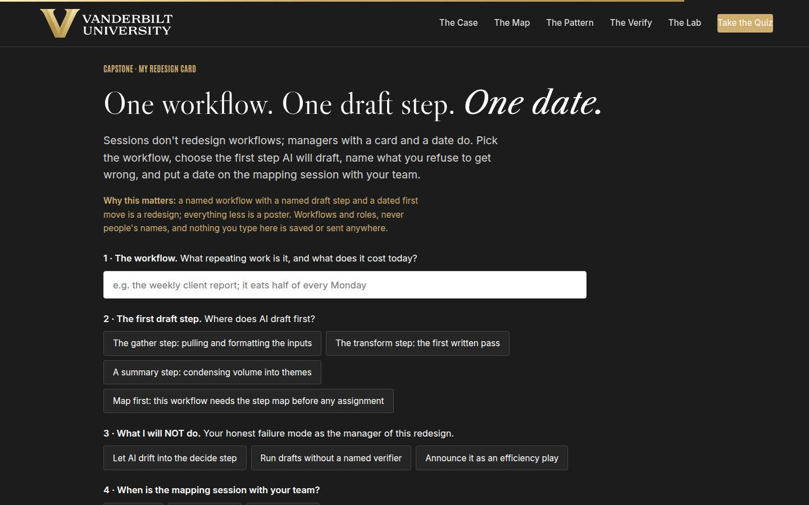
Capstone · My redesign card Full 6 min · Core 6
Convert the session into one dated commitment: one workflow, one first draft step, one named failure mode to avoid, and a dated team mapping session. The transfer artifact and the Level 3 seed.
Say
“Sessions don't redesign workflows. Managers with a card and a date do. Pick the workflow, the real one you mapped today, with its real weekly cost. Choose where AI drafts first, or choose 'map first' honestly if the workflow needs the team's eyes before any assignment. Then the honest field: what you will NOT do, because you know your failure mode; letting AI drift into decisions, running drafts without a named verifier, or announcing this as an efficiency play. And the date: when is the 30-minute mapping session with your team? A named workflow with a named draft step and a dated first move is a redesign. Everything less is a poster.”
Do
- Frame it: sessions don't redesign workflows; managers with a card and a date do.
- Repeat the privacy norm before anyone types: workflows and roles, nothing saved or sent.
- Give quiet time; this is individual work. Circulate for stuck learners: the mapper from section 02 is the raw material, and 'map first' is a legitimate draft-step choice.
- Point at field 3, what you will NOT do, as the honest one: every manager in the room has one of these three failure modes.
- Push the build moment, then the close-the-loop line: after two weeks, one line of evidence, what does Monday cost now and what did the checks catch.
Ask
“What's most likely to make you skip the mapping session, and what's your plan for that obstacle?”
Expect:
- No time; the week will eat it
- Fear the team reads it as a layoff signal
- Doubt about authority over the workflow
Respond: No time: 'It's 30 minutes against a workflow that eats hours weekly; the math forgives you exactly once.' Fear: 'That's what the announcement line and the honest-hours answer are for; draft them before the invite.' Authority: 'Start with a workflow your team invented; those are fully yours, and they're where the hours hide anyway.'
Debrief: One workflow on your team is about to get mapped by the people who run it, with a metric on the wall. That's how the six percent got there: one designed workflow at a time.
Validate: Every learner builds a card (all four fields). The card plus the 7-day pulse plus the 30-day re-poll is the evidence chain.
Watch for: Grand cards ('redesign our whole delivery process'). Push to ONE workflow with a real weekly cost. And date-dodging: a mapping session 'soon' is not a commitment; help them pick the actual day on the spot.
Transition: “Reference shelf in one breath, and then the send-off.”
Core path: Core: protect at full length; never cut the capstone.
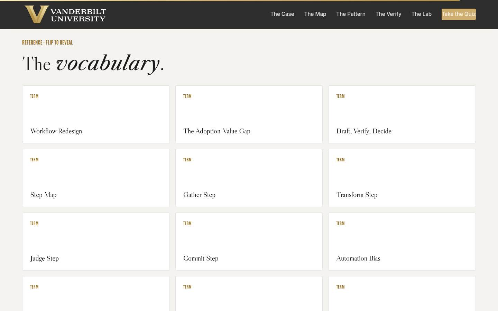
Glossary Full 1 min · Core skip
Signpost the reference layer; it lives here for after the session.
Say
“Every term from today lives here as flip cards, including 'rubber stamp,' for the next time an approval step has passed everything for a year.”
Do
- Flip one card on the projector (Rubber Stamp is a good pick; it gets a knowing laugh and reteaches section 04).
- Tell them it's all here whenever they need the vocabulary back.
Validate: None; reference material.
Watch for: Don't tour all thirteen cards; one flip makes the point.
Transition: “Last slide. One mapping session left.”
Core path: Core: skip; point at it verbally from the closing slide.
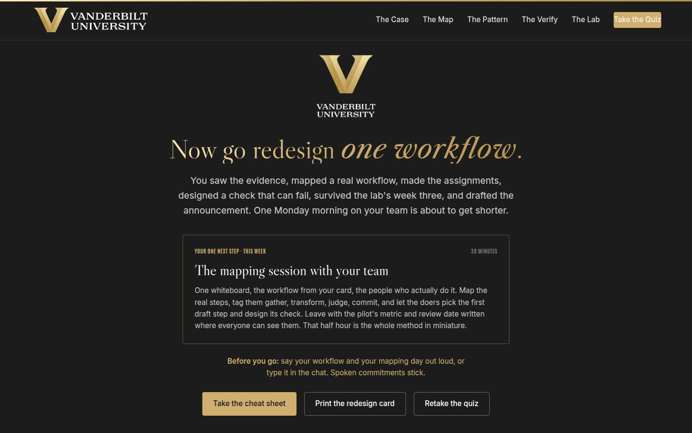
Closing · commitment Full 4 min · Core 1
Convert cards into spoken commitments, capture the Level 1 reaction check, and point at the follow-up chain.
Say
“The whole session in one breath: the data says redesign is the difference, the map makes the work visible, the pattern assigns every step, the verify keeps the drafts honest, the lab showed you week three, and the pilot standard is how your team comes to trust it. You have a card. Before you go: your workflow, and your mapping day. Say it out loud; spoken commitments stick.”
Do
- Read the featured card: the one next step is the 30-minute mapping session with the team, this week, with the doers in the room.
- Run the fist-to-five (Level 1): 'On a fist to five, how confident are you that you can run the mapping session and make the assignments?' Scan and note the number; the 30-day re-poll asks it again.
- Run the commitment round, popcorn style: workflow and mapping day, out loud or in chat.
- Point at the cheat sheet and redesign card buttons; the cheat sheet is built to sit next to a keyboard during the mapping session.
- Tell them the 7-day pulse is coming, then land the last line and stop on time.
Ask
“Around the room, one line each: your workflow, and your mapping day.”
Expect:
- 'The weekly status report, Thursday'
- 'Client onboarding, we map it Monday'
- Someone commits to finding their team's shadow AI use first
Respond: Thank each one, no commentary. For the shadow-use hunter, warmly: 'Good instinct. Ask the team what they'd hate to give back; that question surfaces the shortcuts without making anyone confess.'
Debrief: The session's success metric isn't in this room; it's the 7-day pulse: how many mapping sessions actually ran, and what the teams' maps showed that the managers' versions missed.
Validate: Fist-to-five mostly 3+ (Level 1); a majority state a workflow and a day out loud or in chat. Count both; with the pulse and the 30-day re-poll, that's your evidence chain.
Watch for: Cards that quietly skipped the date. The commitment round catches them: no day, no commitment; help them pick one on the spot.
Transition: “Go book the mapping session. And when the team's map surprises you, and it will, that surprise is the sound of the redesign starting.”
Core path: Core: fist-to-five plus a fast commitment round; the ending survives every cut.
Generated from facilitator/notes.json. The on-screen facilitator edition lives at ./ alongside this guide.